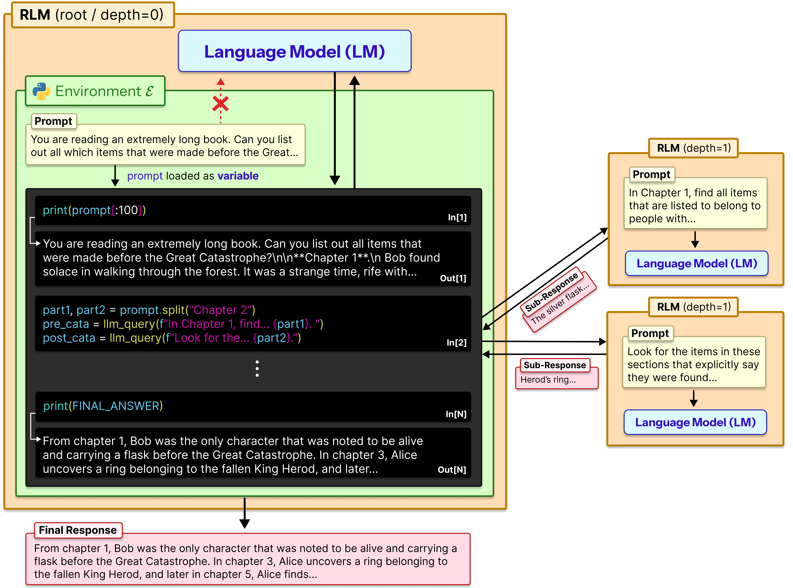
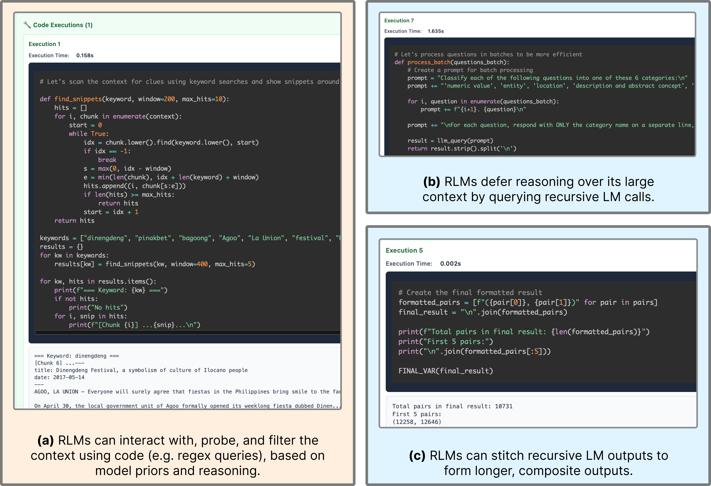
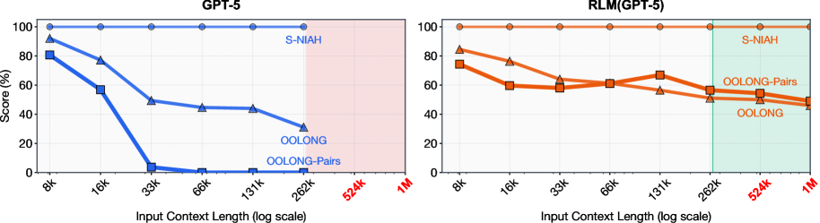
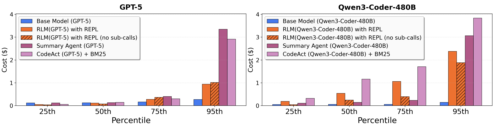

🤖 AI Summary Notice 이 글은 AI(Claude)가 논문을 읽고 작성한 요약입니다. 부정확한 내용이 있을 수 있으니, 정확한 정보는 원문을 참고해주세요.
TL;DR
Recursive Language Models(RLM)은 긴 프롬프트를 LLM에 직접 넣는 대신, 외부 환경의 일부로 취급하여 LLM이 프로그래밍적으로 프롬프트를 탐색·분해하고 자기 자신을 재귀적으로 호출하는 추론 프레임워크이다. RLM은 기존 컨텍스트 윈도우보다 두 자릿수(100배) 이상 긴 입력을 처리할 수 있으며, 소규모 모델(RLM-Qwen3-8B)이 기본 모델 대비 평균 28.3% 성능 향상을 달성하고 일부 벤치마크에서 GPT-5에 근접한 성능을 보였다.
Background / Motivation
LLM의 컨텍스트 윈도우는 지속적으로 확장되고 있지만, 두 가지 근본적인 문제가 남아 있다:
- 컨텍스트 윈도우 한계: 아무리 커도 유한하며, 실제 작업에서는 수백만~수천만 토큰의 입력이 필요한 경우가 있다.
- Context rot: 입력 길이가 길어질수록 모델 성능이 점진적으로 저하되는 현상. 컨텍스트 윈도우 내에 들어가더라도 성능이 보장되지 않는다.
기존의 접근법들은 각각 한계를 가지고 있었다:
- RAG / 검색 기반 방법 — 단순 검색에는 효과적이지만 다중 추론(multi-hop reasoning)이나 정보 집계에 취약
- 요약 에이전트 — 반복적 압축 과정에서 세부 정보 손실 발생
- 직접 long-context 입력 — 비용이 높고, 입력이 길어질수록 품질 저하
이 논문은 inference-time scaling의 관점에서, 컴퓨터 과학의 out-of-core 알고리즘에서 영감을 받아 새로운 접근을 제안한다. 빠른 메모리(컨텍스트 윈도우)보다 큰 데이터를 처리하기 위해, LLM이 긴 프롬프트를 직접 소화하는 대신 외부 환경의 데이터로 취급하고 프로그래밍적으로 상호작용하는 것이 핵심 아이디어이다.
Method
Recursive Language Models (RLM) 프레임워크
RLM은 표준 LLM과 동일한 인터페이스(문자열 입력 → 문자열 출력)를 제공하지만, 내부적으로는 근본적으로 다르게 동작한다:

Figure 2: Recursive Language Model(RLM)은 프롬프트를 환경의 일부로 취급한다. LLM은 Python REPL을 통해 프롬프트를 탐색하고, 필요시 자기 자신(sub-LM)을 재귀적으로 호출한다.
동작 방식:
- 환경 초기화: 긴 프롬프트를 Python REPL 환경의 변수로 설정한다. LLM에는 프롬프트 자체 대신 메타데이터(길이, 구조 등)만 제공한다.
- 프로그래밍적 탐색: LLM은 코드를 작성하여 프롬프트를 검사, 필터링, 분해한다 (예: regex, 문자열 슬라이싱).
- 재귀적 호출:
llm_query()함수를 통해 프롬프트의 부분(snippet)에 대해 sub-LM을 호출하여 하위 작업을 위임한다. - 결과 합성:
FINAL()태그로 완료를 신호하고, 재귀 호출 결과를 종합하여 최종 답변을 생성한다.
주요 설계 선택
- 동기식 실행: LLM이 Python REPL 위에서 동기적으로 동작
- Sub-LM 구성: Root LM으로 GPT-5를, sub-call에는 비용 효율적인 GPT-5-mini를 사용
- 재귀 깊이 1: sub-call은 일반 LM이며 추가 재귀 불가
- 태스크 비특화: 시스템 프롬프트는 모든 태스크에 고정, 최소한의 모델별 조정만 적용
Emergent Patterns
RLM은 태스크별 학습 없이도 다음과 같은 전략을 자발적으로 발견한다:

Figure 4: RLM이 태스크 해결 시 보이는 공통 패턴들 — regex 필터링, 청킹을 통한 재귀 호출, 답변 검증, 변수 전달.
- 정보 필터링:
re.findall()등 코드 기반 쿼리로 관련 정보만 추출 - 청킹(Chunking): 긴 컨텍스트를 분할하여 각 청크에 대해 재귀적 sub-call 수행 후 결과 집계
- 답변 검증: sub-LM 호출로 자신의 답변을 교차 검증
- 변수 전달(Variable stitching): 긴 출력을 REPL 변수에 축적하여 재귀적으로 전달
Key Results
벤치마크 구성
| 태스크 | 입력 길이 | 복잡도 | 설명 |
|---|---|---|---|
| S-NIAH | $2^{13}$ – $2^{18}$ 토큰 | 상수 | 단일 needle-in-a-haystack |
| BrowseComp-Plus | 6M–11M 토큰 | 상수 | 1K 문서에서 정보 검색 |
| OOLONG | 131K 토큰 | 선형 | 의미 변환 + 집계 |
| OOLONG-Pairs | 32K 토큰 | 이차 | 쌍별(pairwise) 집계 |
| CodeQA | 23K–4.2M 토큰 | 고정 추론 | 코드 저장소 이해 |
스케일링 성능

Figure 1: GPT-5와 RLM의 세 가지 long-context 태스크에서의 성능 비교. 입력 길이를 $2^{13}$에서 $2^{18}$까지 증가시켰을 때, 기본 LM은 급격히 성능이 저하되지만 RLM은 완만하게 유지된다.
GPT-5 기반 결과
| 태스크 | Base GPT-5 | CodeAct+BM25 | Summary Agent | RLM |
|---|---|---|---|---|
| CodeQA | 24.0% | 22.0% | 58.0% | 62.0% |
| BrowseComp+ | 0.0% | 51.0% | 70.5% | 91.3% |
| OOLONG | 44.0% | 38.0% | 46.0% | 56.5% |
| OOLONG-Pairs | 0.04% | 24.7% | 0.01% | 58.0% |
Qwen3-Coder-480B 기반 결과
| 태스크 | Base | CodeAct+BM25 | Summary Agent | RLM |
|---|---|---|---|---|
| CodeQA | 20.0% | 24.0% | 50.0% | 56.0% |
| BrowseComp+ | 0.0% | 12.7% | 38.0% | 44.7% |
| OOLONG | 36.0% | 38.0% | 44.1% | 48.0% |
| OOLONG-Pairs | 0.06% | 0.28% | 0.31% | 23.1% |
핵심 관찰
- 극한 스케일링: RLM은 1000만+ 토큰 영역까지 확장 가능하며, base LM 및 기존 에이전트 스캐폴드를 모든 태스크에서 능가한다.
- 재귀 호출의 가치: REPL 환경이 긴 입력 처리를 가능하게 하지만, 정보 밀도가 높은 태스크에서는 재귀적 sub-call이 10%–59% 추가 성능 향상을 제공한다.
- 완만한 성능 저하: 기본 LM은 입력 길이·복잡도에 따라 급격히 저하되지만, RLM은 훨씬 완만하게 저하된다.
- 비용 효율성: RLM의 추론 비용은 base model 호출과 비슷하며, 요약 기반 방법보다 최대 3배 저렴하면서 더 높은 성능을 유지한다.

Figure 3: RLM과 baseline들의 API 비용 비교 (25th, 50th, 75th, 95th 백분위수). RLM은 중앙값 기준으로 경쟁력 있는 비용을 보이나, 95th 백분위에서는 분산이 크다.
- 모델 비특화: RLM은 다양한 모델에 적용 가능하지만, 모델별로 다른 행동 패턴을 보인다. GPT-5는 보수적으로 sub-call을 사용하는 반면, Qwen3-Coder는 태스크당 수천 번의 호출을 시도하여 명시적 제한이 필요했다.
Limitations & Discussion
- 동기식 실행의 한계: 현재 sub-call은 동기적으로만 수행된다. 비동기 접근으로 전환하면 지연 시간과 비용을 크게 줄일 수 있다.
- 재귀 깊이 제한: 최대 깊이가 1로 고정되어 sub-call이 추가 RLM을 호출할 수 없다. 더 깊은 재귀는 복잡한 태스크에서 추가 이점을 제공할 가능성이 있다.
- 비효율적 의사결정: 현재 모델들은 컨텍스트에 대한 의사결정이 최적화되어 있지 않아, 불필요한 호출이나 비효율적 탐색이 발생한다.
- 시스템 설계 의존성: 성능이 REPL 환경 구성, 시스템 프롬프트, sub-LM 선택 등에 크게 의존한다.
- 학습 부재: 현재 결과는 모두 zero-shot이다. RLM 궤적(trajectory)으로 fine-tuning하면 성능이 더 향상될 수 있으며, 이는 유망한 미래 방향이다.
그럼에도 RLM은 LLM의 long-context 처리에 대한 새로운 패러다임을 제시한다. 프롬프트를 신경망에 직접 넣는 것이 아니라 외부 환경으로 취급하는 접근은, 컨텍스트 윈도우 크기에 대한 근본적인 제약을 우회하는 유망한 방향이다.
Citation
@article{zhang2025recursive,
title={Recursive Language Models},
author={Zhang, Alex L. and Kraska, Tim and Khattab, Omar},
journal={arXiv preprint arXiv:2512.24601},
year={2025}
}